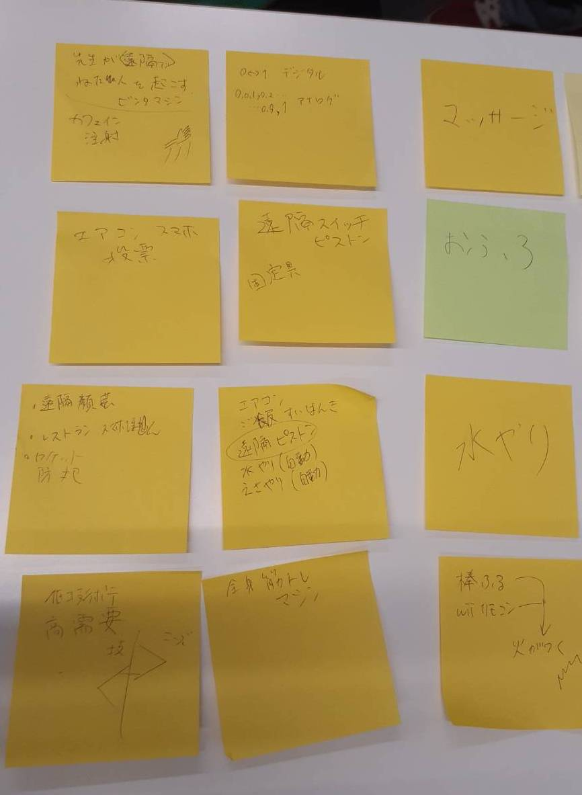
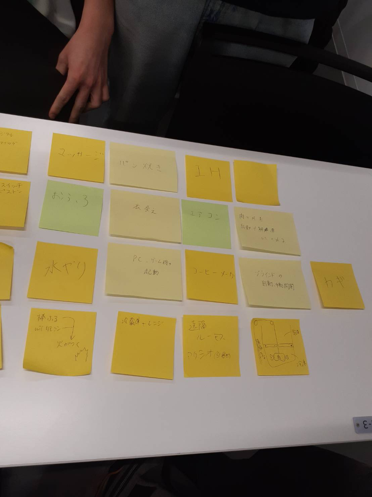
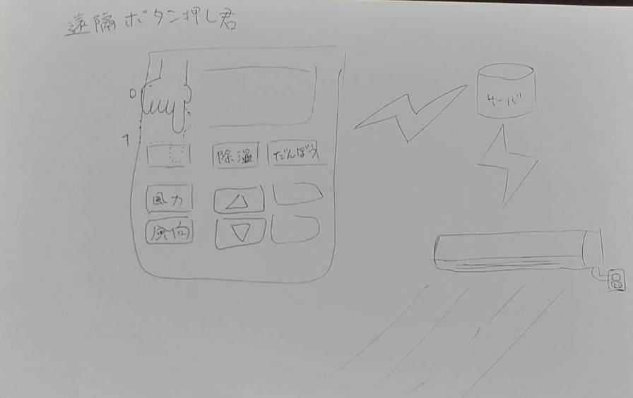

第2回の課題
- IoTとは何か
- 実験した動画をYoutubeにあげて、自分のHPで見れるようにしておく
- IoT(遠隔操作)で何ができそうか？グループワークした内容（ポストイット画像）
- IoT(遠隔操作)で何ができそうか？自分で考えたアイディア（スケッチ）
IoTとは何か
あらゆるものをインターネット（ネットワーク）に接続する技術。
モノのインターネットとも呼ばれる。
実験動画
YouTubeリンク: https://youtube.com/shorts/20YgQeuOSxY
IoT(遠隔操作)で何ができそうか？グループワークした内容（ポストイット画像）


IoT(遠隔操作)で何ができそうか？自分で考えたアイディア（スケッチ）
